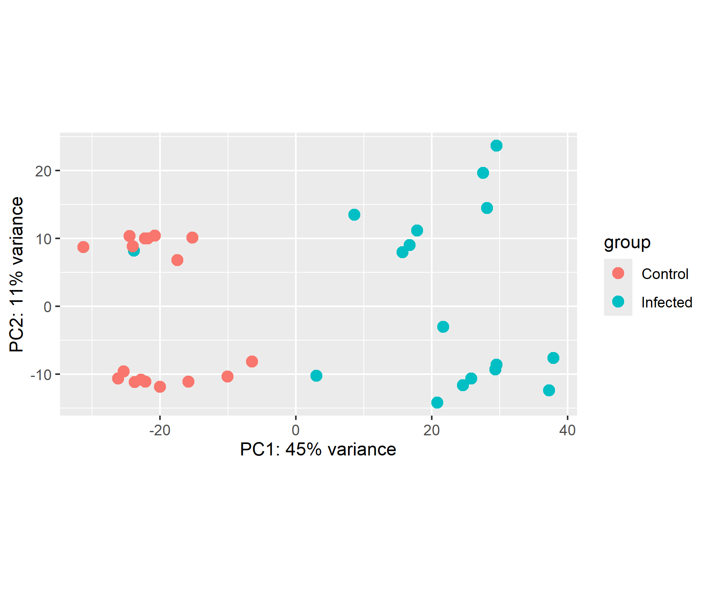
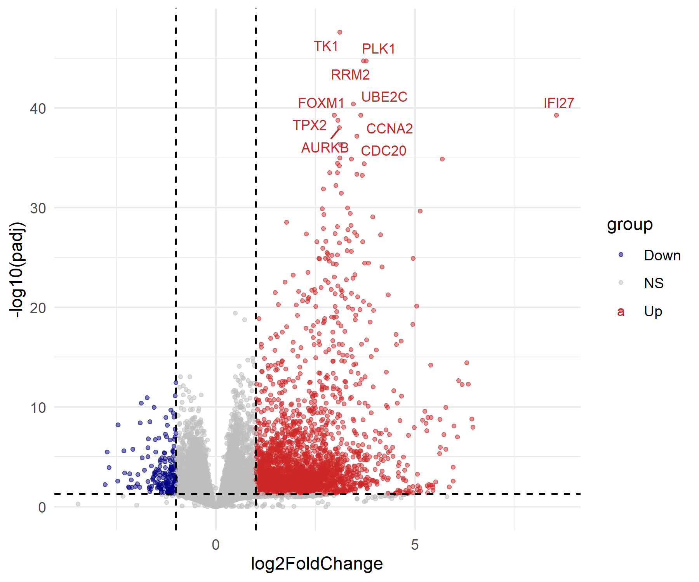
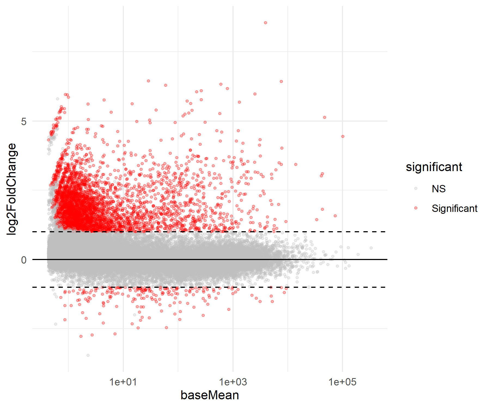
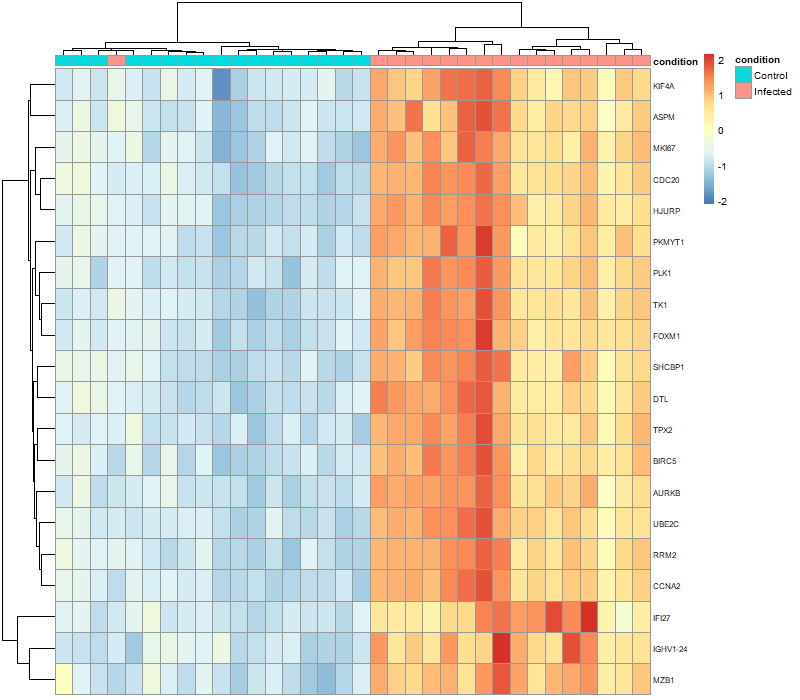
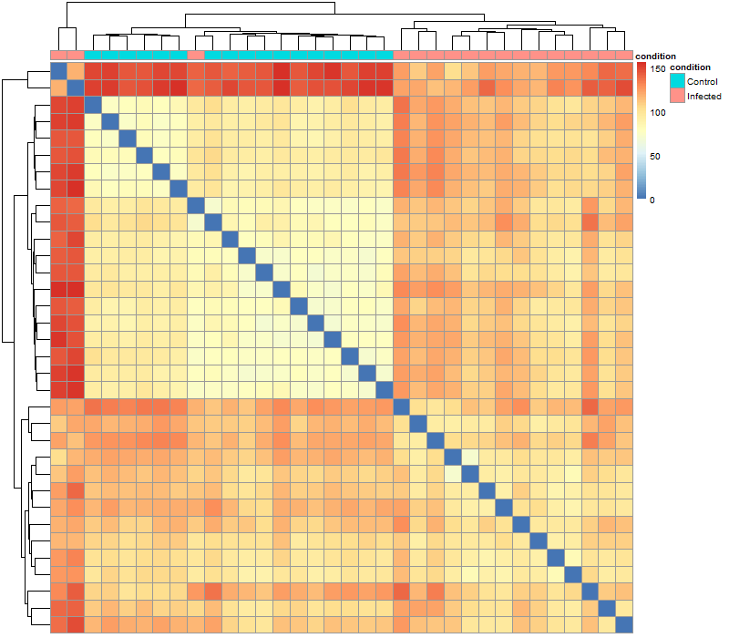
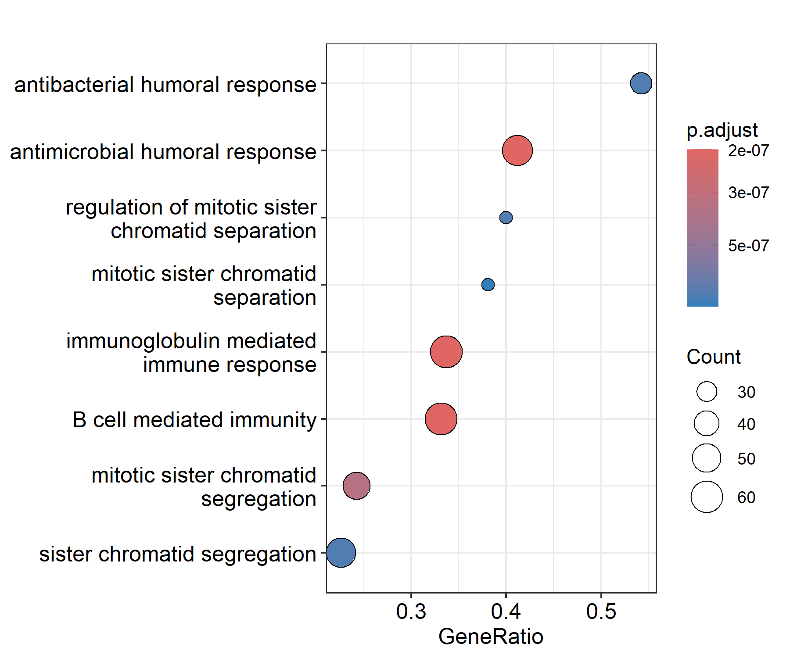
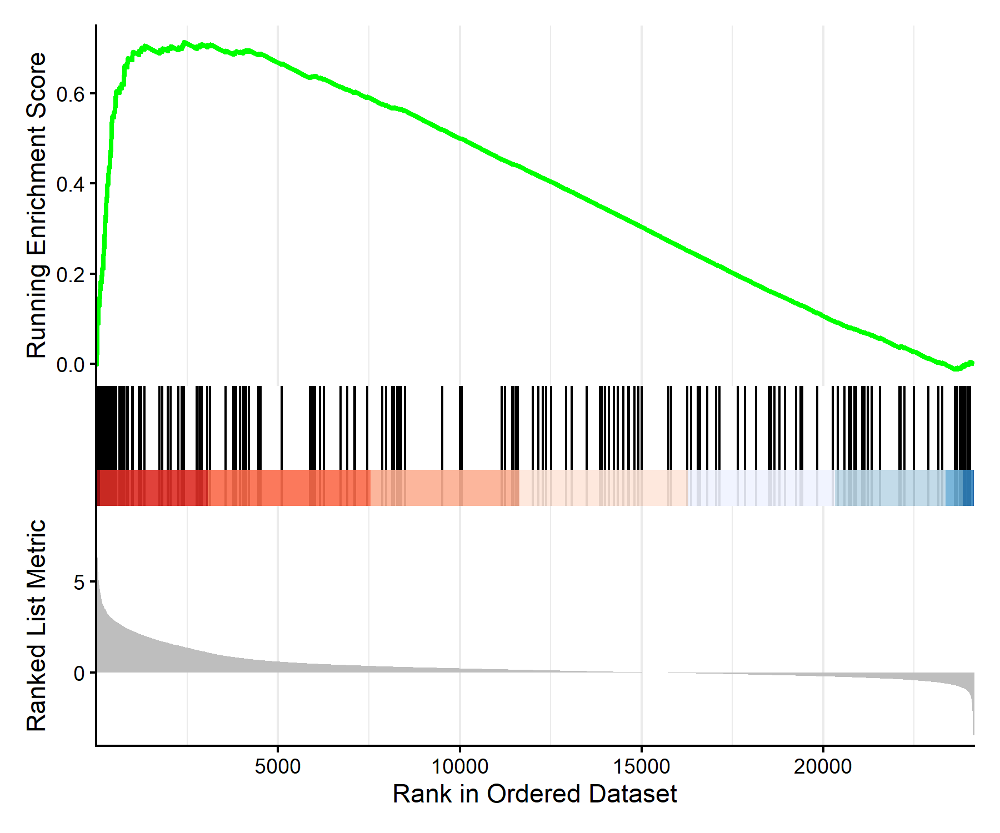

Static portfolio summary of the retained outputs from the GSE152418 bulk PBMC RNA-seq workflow.
Infected label.






| File | Contents |
|---|---|
| all_DESeq2_results_with_symbols.csv | Full DESeq2 result table with gene symbols. |
| all_significant_DEGs.csv | Genes passing the retained significance thresholds. |
| top_100_DEGs.csv | Top 100 significant genes ranked by adjusted p-value. |
| gsea_results.csv | GO Biological Process GSEA results. |
The results are exploratory expression associations under the specified condition-only model. The cohort contains one convalescent library and repeat-draw identifiers, so it is not a clean donor-independent acute-infection contrast. Bulk PBMC expression also cannot distinguish altered cell composition from within-cell transcriptional regulation.
For the full computational workflow and code, see analysis/bulk_analysis.Rmd.